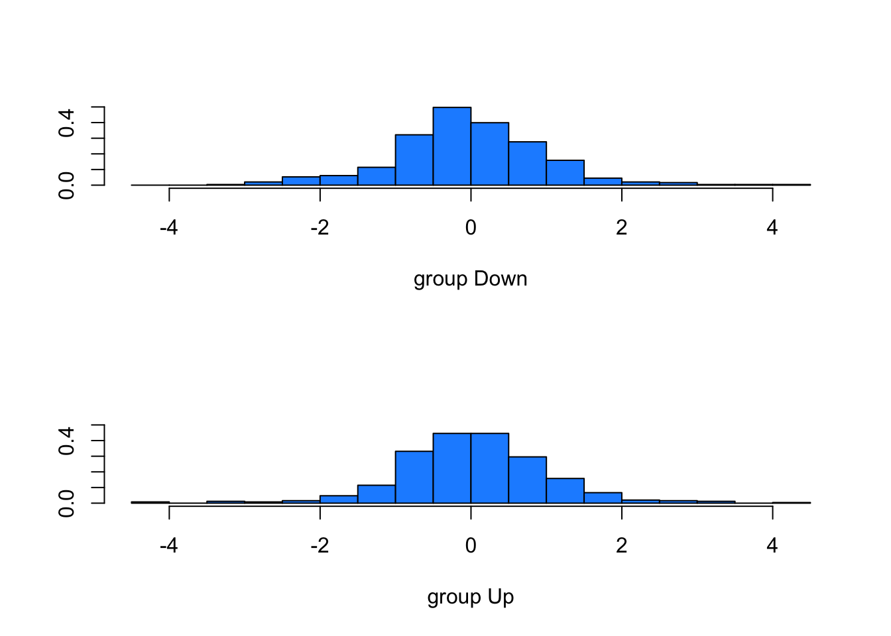
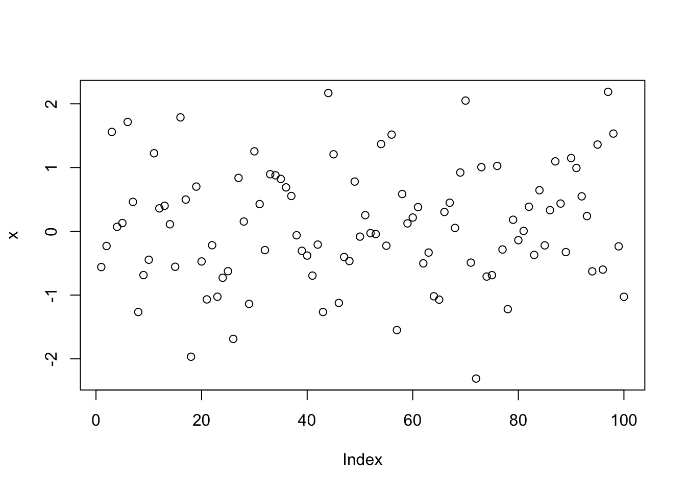
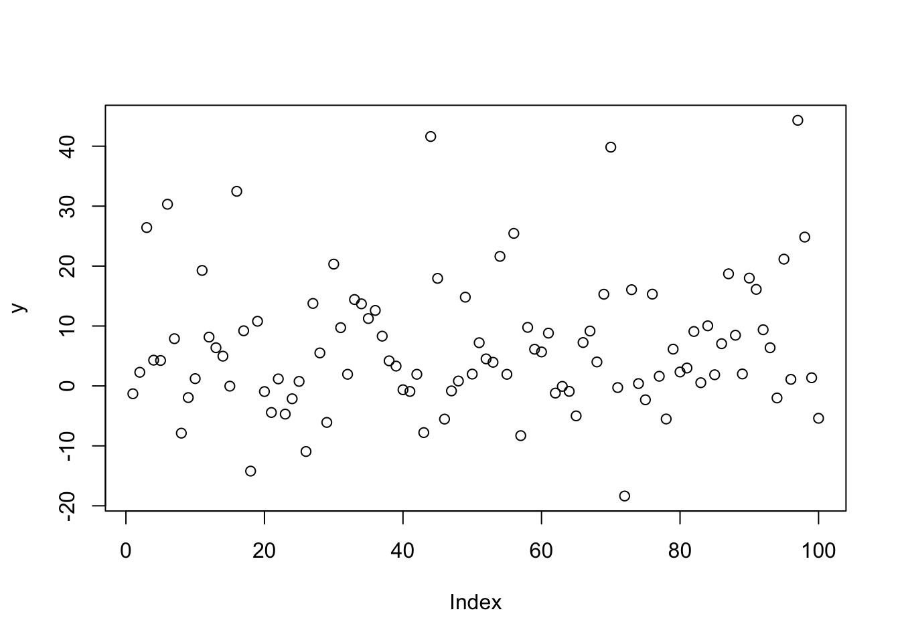
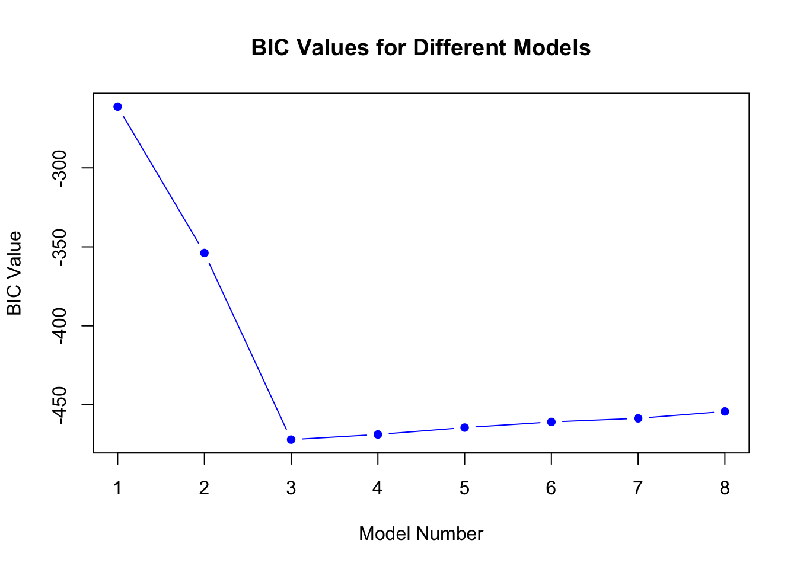
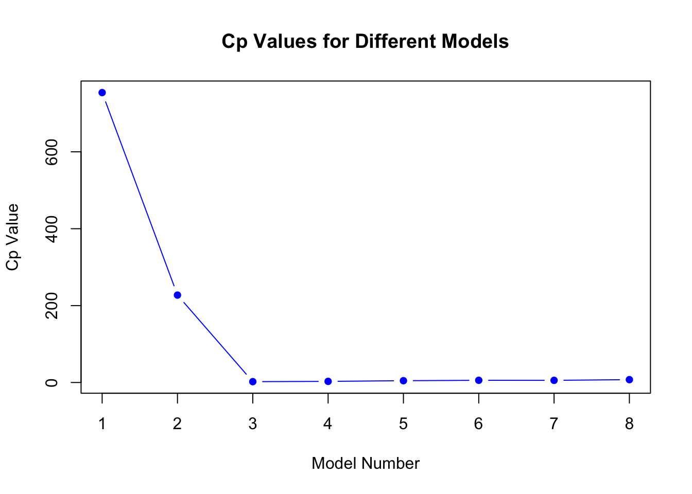
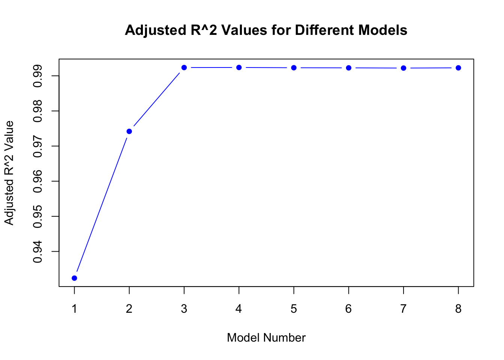
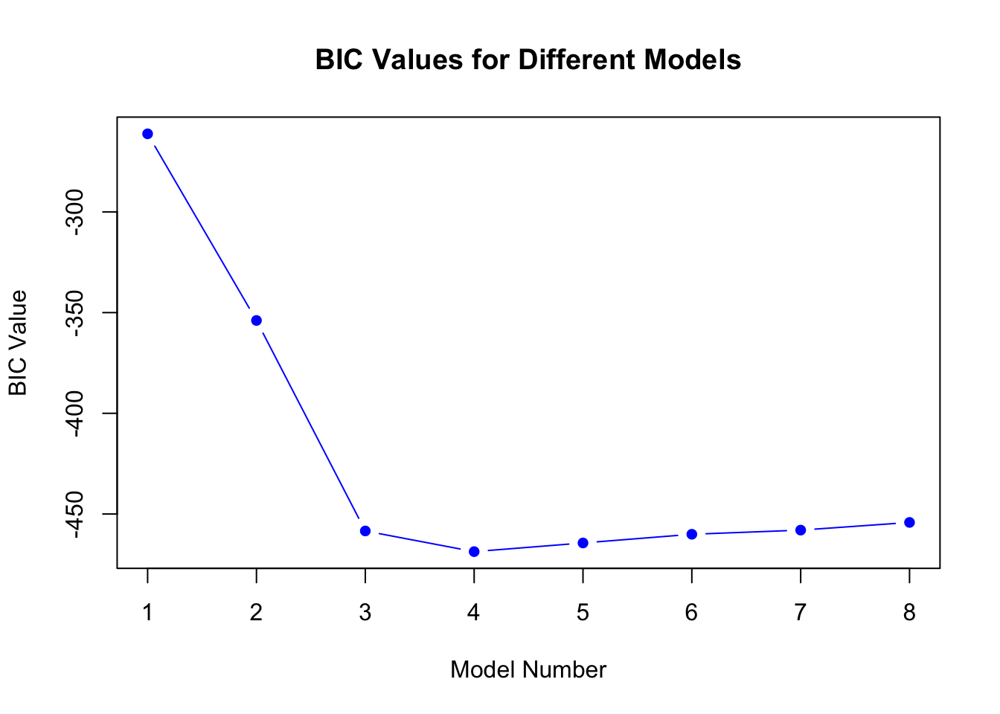
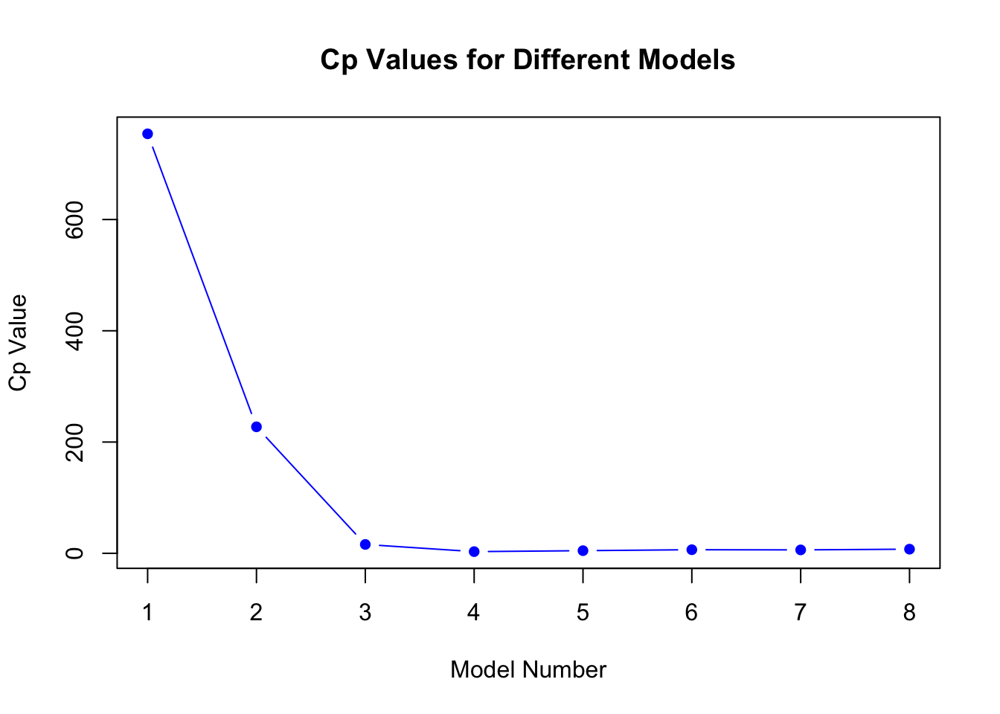

Call:
lda(Direction ~ Lag1 + Lag2, data = Smarket, subset = Year <
2005)
Prior probabilities of groups:
Down Up
0.491984 0.508016
Group means:
Lag1 Lag2
Down 0.04279022 0.03389409
Up -0.03954635 -0.03132544
Coefficients of linear discriminants:
LD1
Lag1 -0.6420190
Lag2 -0.5135293
plot(lda.fit, col="dodgerblue")

Smarket.2005=subset(Smarket,Year==2005) # Creating subset with 2005 data for predictionlda.pred=predict(lda.fit,Smarket.2005)names(lda.pred)
Direction.2005
lda.class Down Up
Down 35 35
Up 76 106
data.frame(lda.pred)[1:5,]
class posterior.Down posterior.Up LD1
999 Up 0.4901792 0.5098208 0.08293096
1000 Up 0.4792185 0.5207815 0.59114102
1001 Up 0.4668185 0.5331815 1.16723063
1002 Up 0.4740011 0.5259989 0.83335022
1003 Up 0.4927877 0.5072123 -0.03792892
table(lda.pred$class,Smarket.2005$Direction)
Down Up
Down 35 35
Up 76 106
mean(lda.pred$class==Smarket.2005$Direction)
[1] 0.5595238
The best subset selection model will have the smallest training rss. The stepwise selection models will have the smallest test rss. Between the forward and backward models, it will depend on the specific data being modeled.
set.seed(123)x <-rnorm(100)eps <-rnorm(100)y <-4+9* x +2* x^2+ x^3+ epsplot(x)

plot(y)

require(leaps)best_subset <-regsubsets(y ~poly(x, 10, raw = T), data =data.frame(y,x, nvmax =10))bic <-summary(best_subset)$biccp <-summary(best_subset)$cpadjr2 <-summary(best_subset)$adjr2plot(bic, type ="b", pch =16, col ="blue", xlab ="Model Number", ylab ="BIC Value", main ="BIC Values for Different Models")

plot(cp, type ="b", pch =16, col ="blue", xlab ="Model Number", ylab ="Cp Value", main ="Cp Values for Different Models")

plot(adjr2, type ="b", pch =16, col ="blue", xlab ="Model Number", ylab ="Adjusted R^2 Value", main ="Adjusted R^2 Values for Different Models")
which.min(bic)
[1] 3
which.min(cp)
[1] 3
which.max(adjr2)
[1] 7
coef(best_subset, id =3)
(Intercept) poly(x, 10, raw = T)1 poly(x, 10, raw = T)2
3.970394 8.920446 1.908457
poly(x, 10, raw = T)3
1.020436
The best model is model 3 which has the lowest BIC value and Cp value. While model 7 has the maximum adjusted R squared value, the R squared plot begins to plateau at model 3, and I suspect overfitting to occur.
The coefficients for model 3 are 3.97, 8.92, 1.91, and 1.02 for the intercept, B1, B2, and B3 respectively.
for_subset <-regsubsets(y ~poly(x, 10, raw = T), data =data.frame(y,x, nvmax =10), method ="forward")plot(summary(for_subset)$bic, type ="b", pch =16, col ="blue", xlab ="Model Number", ylab ="BIC Value", main ="BIC Values for Different Models")
plot(summary(for_subset)$cp, type ="b", pch =16, col ="blue", xlab ="Model Number", ylab ="Cp Value", main ="Cp Values for Different Models")
plot(summary(for_subset)$adjr2, type ="b", pch =16, col ="blue", xlab ="Model Number", ylab ="Adjusted R^2 Value", main ="Adjusted R^2 Values for Different Models")

which.min(summary(for_subset)$bic)
[1] 3
which.min(summary(for_subset)$cp)
[1] 3
which.max(summary(for_subset)$adjr2)
[1] 4
coef(for_subset, id =3)
(Intercept) poly(x, 10, raw = T)1 poly(x, 10, raw = T)2
3.970394 8.920446 1.908457
poly(x, 10, raw = T)3
1.020436
The best model is model 3 again with the lowest BIC and Cp values. Model 4 wins the best adjusted R squared value but model 3 has a similar adjusted R squared value according to the plot.
The coefficients for model 3 are 3.97, 8.92, 1.91, and 1.02 for the intercept, B1, B2, and B3 respectively.
bac_subset <-regsubsets(y ~poly(x, 10, raw = T), data =data.frame(y,x, nvmax =10), method ="backward")plot(summary(bac_subset)$bic, type ="b", pch =16, col ="blue", xlab ="Model Number", ylab ="BIC Value", main ="BIC Values for Different Models")

plot(summary(bac_subset)$cp, type ="b", pch =16, col ="blue", xlab ="Model Number", ylab ="Cp Value", main ="Cp Values for Different Models")

plot(summary(bac_subset)$adjr2, type ="b", pch =16, col ="blue", xlab ="Model Number", ylab ="Adjusted R^2 Value", main ="Adjusted R^2 Values for Different Models")
which.min(summary(bac_subset)$bic)
[1] 4
which.min(summary(bac_subset)$cp)
[1] 4
which.max(summary(bac_subset)$adjr2)
[1] 4
coef(bac_subset, id =3)
(Intercept) poly(x, 10, raw = T)1 poly(x, 10, raw = T)2
3.9620068 9.8934015 1.9689642
poly(x, 10, raw = T)5
0.1748705
Using the backwards stepwise selection method, model 4 performs the best on all 3 metrics. The coefficients are 3.96, 9.89, 1.97, and 0.17 for the intercept, B1, B2, and B3 respectively.